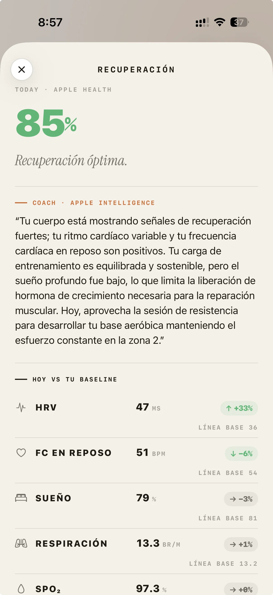
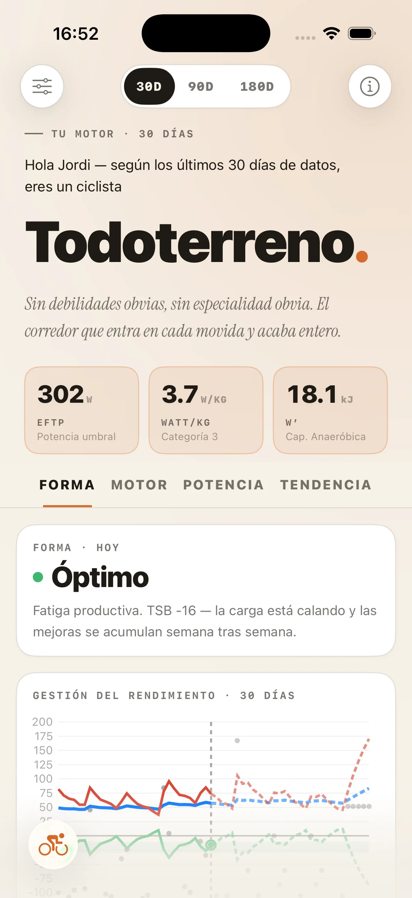
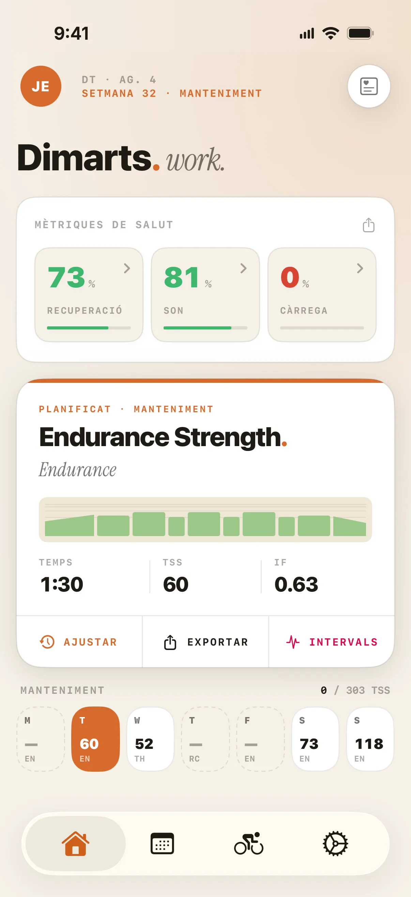
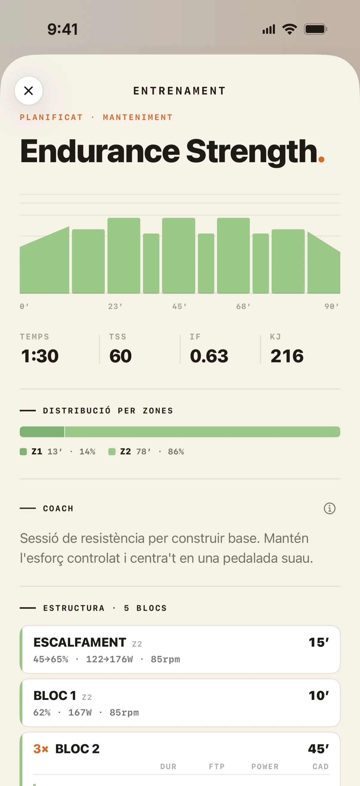
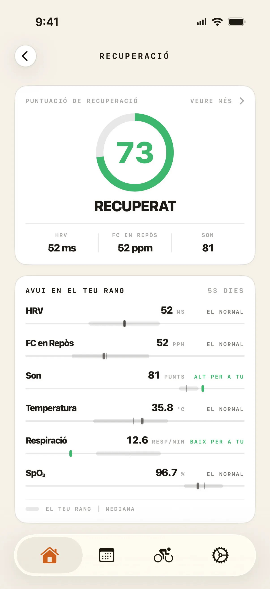
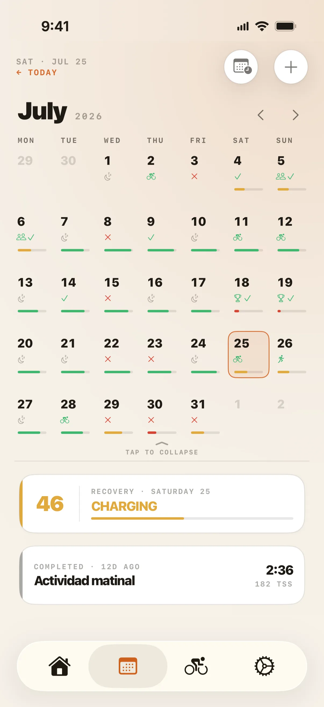
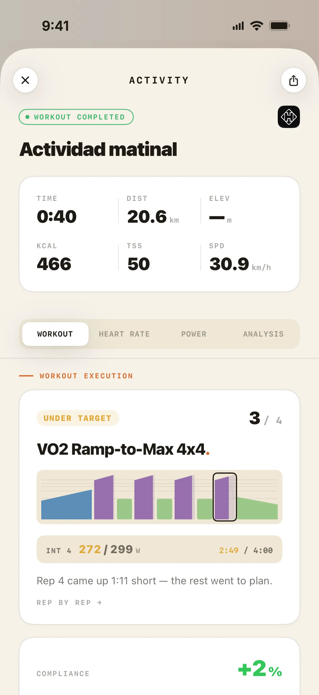
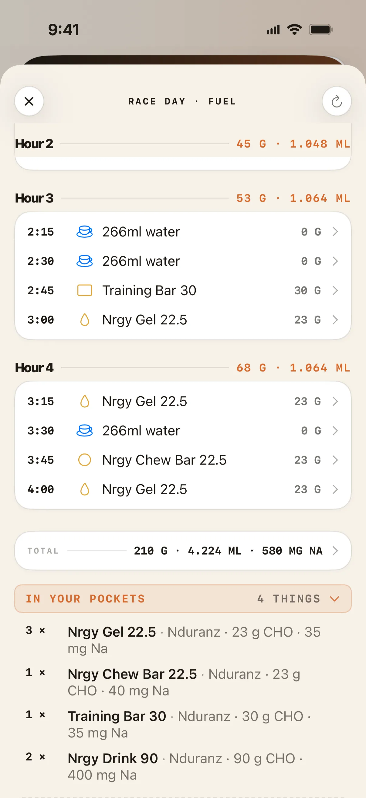

Entrenament adaptatiu · Ja a l’App Store
Un entrenador amb forma d’algorisme.
Cada pantalla està pensada al voltant del que un ciclista seriós necessita veure de debò: recuperació, càrrega i la sessió següent, adaptant-se en temps real.



El producte · 7 pantalles
Mira’l en acció.







Com pensa
Res d’IA. Res de chatbots. Un entrenador amb forma d’algorisme.
S’adapta al teu cos
Llegeix la teva recuperació — en tots dos sentits
Summit llegeix la teva VFC, freqüència cardíaca en repòs i son des d’Apple Health. Baixa la càrrega quan estàs cansat, i prem quan estàs fi per aprofitar les teves millors finestres de recuperació. En totes dues direccions, com un bon entrenador.
S’adapta a la teva vida
Tu poses el temps, Summit posa el pla
Digues a Summit quant temps tens cada dia. Avui no hi ha forat? No es trenca res. Se n’obre un? Replanifica. I cada recomanació remet a una regla de la ciència de l’esport i a les teves dades reals, mai a una caixa negra.
Gratis per sempre
La teva recuperació i el teu son, gratis per sempre.
Si ets ciclista i ja portes un Apple Watch, Summit llegeix el que el teu rellotge mesura cada nit i te’l torna interpretat. El que altres apps cobren cada mes, amb el rellotge que ja tens.
No és una prova de 14 dies. És el nivell gratuït.
- Recuperació diària. VFC, freqüència cardíaca en repòs i son, llegits des d’Apple Health — la puntuació d’avui i el detall que hi ha al darrere.
- Son, amb el perquè. No només la puntuació: quina nit has tingut, què l’explica i el desglossament complet de totes dues coses.
- La teva tendència. Trenta dies de recuperació, per llegir-ne la direcció i no només el número d’avui.
- Cada sortida que fas. Strava, Hammerhead Karoo i Apple Health importen les teves sortides sols, amb el mapa de la ruta, les estadístiques i el perfil de desnivell de cadascuna — i una targeta per compartir quan val la pena ensenyar-la.
- La forma de la teva setmana. El tipus de sessió del dia, la seva durada i la fase d’entrenament en què ets, en un calendari que porta les teves curses, concentracions i vacances.
- Widgets. Recuperació, son i càrrega a la pantalla d’inici i de bloqueig, sense obrir l’app.
Com començar
De la descàrrega al teu primer pla.
Descarrega-la i obre-la
Gratis a l’App Store, iPhone amb iOS 26 o posterior. Sense targeta i sense compte enrere de prova.
Connecta Strava i Apple Health
Les teves rodades s’importen soles tan bon punt n’acabes una. La VFC, la freqüència cardíaca en repòs i el son es llegeixen des d’Apple Health — des d’un Apple Watch, o qualsevol wearable que hi escrigui, encara que només l’Apple Watch escriu el conjunt complet.
Digues-li com és la teva setmana
Quant temps tens de debò i l’esdeveniment al qual apuntes. El pla es construeix al voltant d’això.
Roda. Summit segueix el ritme.
La recuperació i la teva disponibilitat mouen el pla soles. Et saltes una sessió, et poses malalt, viatges — la setmana es reescriu i l’objectiu es manté.
Què inclou l'app
Tot el que un ciclista seriós fa servir de debò.
CTL / ATL / TSB — en temps real
Càrrega, fatiga i forma seguides en directe a cada sessió. Els números que els ciclistes seriosos fan servir de debò, sempre al dia.
Recuperació que mou el pla
El teu estat no es queda en un número — canvia la sessió. La intensitat s’ajusta abans que obris l’app.
eFTP i corba de potència
Estimació contínua amb el model CP2. Sense tests manuals: el teu historial de rodades fa la feina.
Periodització avançada
Blocs de base, construcció, pic i afinament estructurats al voltant dels teus esdeveniments objectiu, amb adaptació total a la teva disponibilitat real.
Cascada del pla
Et saltes una sessió. Et poses malalt. Canvies de plans. Summit reescriu la teva setmana i manté l’objectiu a la vista.
Nutrició de cursa
Objectius de carbohidrats, líquids i electròlits segons la durada de la teva cursa i el teu pes — construïts amb els productes que realment fas servir.
Nutrició integrada
Avituallament integrat, no afegit.
Dia de cursa
Planificador de nutrició de cursa
Objectius de carbohidrats, líquids i electròlits segons la durada de la teva cursa i el teu pes, construïts al voltant dels gels i begudes que fas servir de debò, no productes genèrics. Sàpigues què menjar, i quan.
Al roadmap
Pla de nutrició basat en el teu entrenament
Alimentació diària construïda a partir dels teus entrenaments planificats i completats — més carbohidrats en dies durs, més lleugera en dies de recuperació — amb receptes diàries i llista de la compra. En desenvolupament: encara no forma part de la versió de l'App Store.
Mira-ho al roadmap →És per a tu?
Fet per a l’amateur seriós.
Amb opinió per disseny. Ciència de l’esport real. Sense dreceres.
- Entrenes amb potenciòmetre i et prens de debò el teu FTP
- Ja fas servir Strava i vols que les teves dades treballin de debò per a tu
- Has superat els plans genèrics i vols una cosa que s’adapti a la teva vida
- T’importa la recuperació tant com el volum
- Vols arribar a punt per a un esdeveniment objectiu, o simplement seguir millorant, competeixis o no
- Vols la nutrició integrada en el teu entrenament, no afegida a part
Preguntes
El que la gent pregunta abans de descarregar.
És Summit una app d'IA?
La part que més importa, no. El motor d'entrenament i adaptació de Summit —el que decideix quan carregar, recuperar i descarregar— és un sistema algorítmic determinista. Sense model de llenguatge, sense chatbot, sense contingut generatiu: segueix regles codificades de ciències de l'esport i produeix recomanacions predictibles i explicables, que pots rastrejar fins a un càlcul concret i no a una caixa negra.
He de pagar per veure la meva recuperació i el meu son?
No. Si ets ciclista i portes un Apple Watch — o qualsevol wearable que escrigui a Apple Health — la teva puntuació de recuperació diària, la teva puntuació de son i el desglossament complet que hi ha al darrere de totes dues són gratis mentre facis servir Summit. Només l'Apple Watch escriu el conjunt complet de mètriques que Summit fa servir, però un altre wearable et continua donant una puntuació a partir del que sí que escriu.
I força més: la tendència de recuperació de 30 dies, els widgets de pantalla d'inici i de bloqueig, la importació automàtica de sortides des de Strava, Hammerhead Karoo i Apple Health, i el mapa de la ruta, les estadístiques i el perfil de desnivell de cada sortida. Pots posar les teves curses, concentracions i vacances al calendari, i veure la forma de la sessió del dia — el seu tipus, la seva durada i la fase d'entrenament en què ets. És el nivell gratuït, no una prova que caduca. La càrrega d'entrenament i l'anàlisi de potència, el detall de freqüència cardíaca i potència de cada sortida, i la sessió prescrita en si són les parts que necessiten Summit Premium.
Necessito un Apple Watch?
No. Summit llegeix VFC, son i dades de recuperació directament des d'Apple Health, així que funciona amb allò que hi escrigui.
A la pràctica, l'Apple Watch és l'únic dispositiu que escriu el conjunt complet que Summit fa servir — VFC, freqüència cardíaca en repòs, son, freqüència respiratòria, oxigen en sang i temperatura del canell durant la nit. Un altre wearable et dona una puntuació de recuperació a partir del que sí que escriu; l'Apple Watch et dona la imatge completa. Continua sense haver-hi cap app de Summit per al rellotge: el rellotge és el sensor i qui llegeix és l'iPhone.
Si en portes un, el que Summit construeix a partir d’ell — la teva puntuació de recuperació i la teva anàlisi de son — forma part del nivell gratuït.
Necessito un potenciòmetre?
Per als càlculs de càrrega, no. Summit fa servir freqüència cardíaca i esforç percebut per estimar la càrrega quan no hi ha dades de potència.
Per a entrenaments estructurats, sí ara per ara. Els entrenaments es prescriuen actualment en zones de potència (% FTP), així que necessites un potenciòmetre per seguir-los amb precisió. Roadmap Les prescripcions per zones de FC estan en camí — és una prioritat coneguda.
Què passa si em salto una sessió?
Summit ho detecta automàticament i recalcula el teu pla. A això li diem cascada de pla — sessions saltades, sessions completades, malaltia, viatges o qualsevol canvi en la teva disponibilitat activen un ajust automàtic del que ve a continuació.
Mai et quedaràs atrapat seguint un pla que va deixar de tenir sentit fa tres dies.
Com arriben els entrenaments al meu Garmin, Karoo o Zwift?
Per a una Hammerhead Karoo, Summit envia els entrenaments estructurats directament al ciclocomputador mitjançant una connexió nativa i directa.
Per a Garmin, Zwift i MyWhoosh, Summit fa servir intervals.icu com a centre de distribució: una sola connexió arriba als tres. Connectes cadascun una vegada a la configuració de Summit i, a partir d'aquí, és automàtic.
Quant costa Summit?
Summit és gratis per descarregar, i el nivell gratuït no és una prova: la teva puntuació de recuperació diària i la teva anàlisi de son completa continuen sent gratis mentre facis servir l'app.
Summit Premium afegeix dos nivells: Pro (anàlisi detallada de l'entrenament — càrrega, potència i anàlisi per activitat) i Elite (accés complet a la plataforma, incloent el pla adaptatiu i les noves funcions a mesura que es llancin, i suport prioritari).
Pots veure el preu actual de Premium a la mateixa app i a l'App Store.
Està Summit disponible a Android?
Encara no. Summit és iOS-first i ja està disponible a l'App Store. Android és al roadmap per al 2027, però iOS és el focus d'aquesta versió.
Si ets a Android, segueix-nos a Instagram — compartirem avenços i t'avisarem tan bon punt estigui llest.
Connecta amb el teu equip
Funciona amb les plataformes que ja fas servir.
Sense importacions manuals. Les rodades entren, els entrenos estructurats surten —directe al teu Karoo, o via intervals.icu a Garmin, Zwift i MyWhoosh— i la recuperació flueix sola.
Una línia nativa i directa amb el teu Karoo: planifica una sessió i apareix al ciclocomputador, a punt per rodar.
Les rodades s’importen soles tan bon punt acabes. Sense sincronitzar, sense pujar res.
Envia sessions estructurades a Garmin, Zwift i MyWhoosh amb un toc.
VFC, freqüència cardíaca en repòs, son i temperatura corporal, llegits de forma segura, al dispositiu.
● Ja disponible · iOS
Roda més llest, des d’avui.
Summit ja és a l’App Store. Descarrega-la, connecta Strava i deixa que el pla comenci a aprendre’t.
Dubtes abans de descarregar? Escriu a team@projectsummit.app — respon en Jordi, que és qui construeix Summit. Sense bots ni cues de tickets.